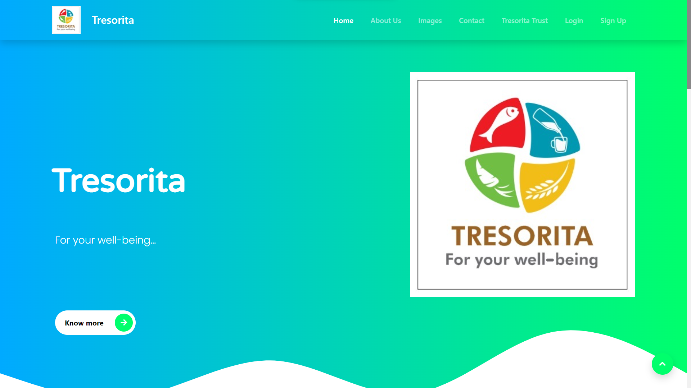
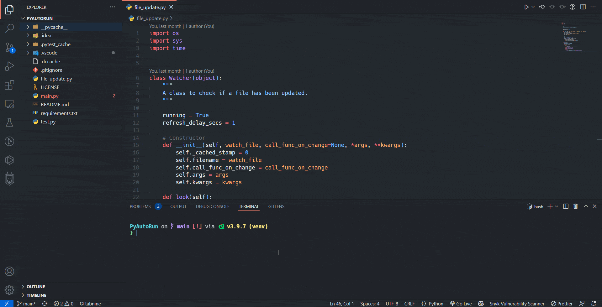
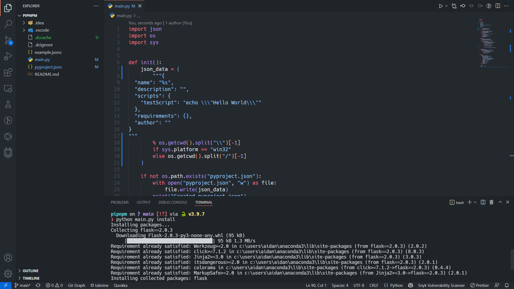

Projects
Saints for Us

This is a website about a few saints. This is a personal project that I
began
because there are not many websites on this topic. This
project uses the
PHP for the backend and I have used plain CSS,
JavaScript and a little
bit of Bootstrap. Here is the website:
saintsforus.com
Tresorita

This website is made for Mr. Josi Cherian. The frontend code for this
website
has been taken from another repository, mentioned in the
Project README,
while the backend has been implemented in PHP and
MySQL.
PyAutoRestart

This is a nodemon clone but for Python. I have not used any third party
libraries
for this project. The reason I made this is because while
testing games made
with pygame, it was really frustrating to
re-run the program from time to time
after making changes.
PipNPM

PipNPM adds functionality to create a package.json like file to add
scripts and
install dependencies for Python. This project is not
yet finished.